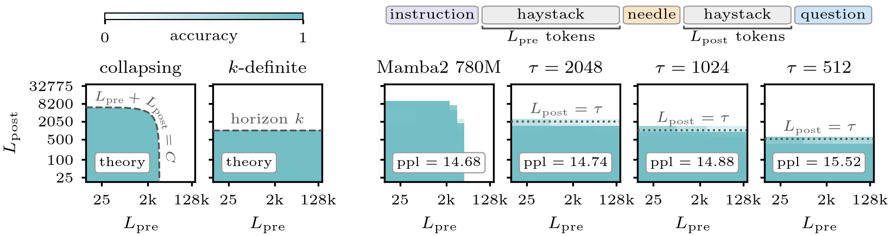

Interactive illustration
Length-Independent State Tracking Under a Parallel Scan
To track a finite state at any sequence length, each update of a recurrent network has to remove its own numerical error and also carry out the next transition.
Code of the paper, available during the review period: github.com/dd8wgy467d-hash/reviewanonymous.
How to read this page
Keep the PDF open next to this page. The tag above each section, for example
Paper §3, Thm 3.1, says which part of the paper it follows. Most
figures run small toy models in your browser. Only the figures of §7 show results measured in the paper.
The </> Code button flips a figure over to the code behind it, with your current settings
highlighted.
| Paper | Figure | What you do |
|---|---|---|
| §2, Defs 2.1 and 2.2 | N1, N2 | run an automaton; watch an affine RNN realize ℤ5, then lose it |
| §3, Thms 3.1 to 3.3, Fig. 1 | N3, N4 | switch restoration on and off; compare one rate with two |
| §4, App. E, Fig. 4 | N5, N6 | watch an exactly trained rotation drift; see which words a contracting model holds |
| §5, App. D, Fig. 3 | N7 | scan over tables, then over affine maps in fp16 |
| §6, App. G | N8, N9 | edit the logits of a Neural-FSM head; split S3 over two heads |
| §7.1, App. H | N10, N11 | browse the failing lengths; read a TSO story |
| §7.2, App. I, Fig. 2 | N12, N13 | hold a spoken digit through noise; retrieve a needle with a pretrained Mamba-2 |
Paper §1, Introduction
1. Why ask for length independence?
State space models, gated linear RNNs and linear attention all scale for the same reason. Their recurrence is affine in the hidden state, so a parallel scan evaluates it in \(O(\log L)\) depth. When they are trained on state tracking, they do well up to the training length and fail soon after. Much of that failure comes from learning. The paper isolates the part that better training would not fix, finite precision. It asks what an RNN needs in order to track a state at every length, whether an affine recurrence can have it, and if not, whether some other scan-compatible recurrence can.
Section 7 checks the answers on synthetic automata, on spoken digits buried in hours of noise, and on a pretrained Mamba-2.
Paper §2, Formalization, State tracking and automata
2. Automata, RNNs, and finite precision
A task is a semiautomaton \((Q,\Sigma,\delta)\). Reading a word \(w\) moves the states by the composite map \(\delta_w\), and the set of all such maps is the transition monoid \(M_\delta\). Every task on \(n\) states lives inside \(T_n\), the monoid of all maps \(Q \to Q\), so an architecture that implements all of \(T_n\) covers every such task.
Paper §2, eqs. (1) to (3), Definitions 2.1 and 2.2, App. D, Lemma D.1
Realization at finite precision
An RNN realizes the automaton when an encoding \(\iota\), an update \(\Phi_x\) and a readout \(\pi\) reproduce its runs (eq. 3). The paper models finite precision as an error of size at most \(\eta\) added at each step, and Lemma D.1 shows that every run of a real machine is such an η-trajectory. Length independence then asks for a correct readout on every η-trajectory (T1) and for a bounded reachable set \(U^\star\) (T2). Boundedness is what lets a fixed number of bits suffice at every length.
N2 runs the smallest affine realization of \(\mathbb Z_5\), \(A_x = \rho R(2\pi x/5)\), as a toy. The dashed disk contains the endpoint of every η-trajectory. Its radius obeys \(r_t = \rho\, r_{t-1} + \eta\), so at \(\rho = 1\) it grows by \(\eta\) at each step.
Try Set \(\rho = 1\), tick worst case, then add samples: the disk crosses a cell boundary at \(L^\star\).
Paper §3, Theorems 3.1 and 3.2, eq. (4), Figure 1
3. Three conditions on one step, two rates in one map
Theorem 3.1 turns length independence into three conditions on a single step. (R1) asks for a code that can be decoded, (R2) for restoration, \(\Phi_x(U)\oplus\bar B_\eta \subseteq U\), and (R3) for the right transition even under perturbation. In geometric terms (eq. 4), each cell has to land inside the cell of its successor with \(\eta\) to spare. Von Neumann called the two jobs the executive organ and the restoring organ. In a recurrence, one map has to do both.
Try Raise \(\lambda\) to 1: the reachable set widens every step until it straddles two cells.
Paper §3, Theorem 3.3; App. F, Lemma F.11
Two rates in one map
Iterated along a word, eq. (4) requires contraction inside each cell and separation between cells
(Thm 3.3). The difficult words are those that keep two states apart, such as id in the
flip-flop, and Lemma F.11 shows that every nondefinite automaton has one. N4 iterates a one-dimensional map
from the two code points \(\pm1\), with \(\beta\) controlling how far the map is from affine. At
\(\beta = 2\) the map contracts inside the cells and expands between them, and it holds both cells. At
\(\beta = 0.3\) it is close to affine.
Try Move \(\beta\) from 0.3 to 2 and watch the second cell appear.
Paper §4.1, eq. (5), Theorem 4.1, App. C.2, App. E, Figure 4
4. An affine recurrence supplies a single rate
For an affine recurrence, \(\Phi_w(h) - \Phi_w(h') = A_w (h-h')\) (eq. 5). One matrix acts on the distance between two code points and on the perturbation alike, and Theorem 4.1 follows from this. When \(\rho(A_w)\ge 1\) for some word, perturbations build up and (R2) fails. When \(\rho(A_w) < 1\) for every word, the model forgets old inputs together with the perturbation and can realize at most a definite automaton. Table 3 (App. C.2) places most scan-compatible architectures on one branch or the other. The theorem is a worst-case statement. No affine recurrence is guaranteed correct at every length, although a given run can be.
Perfect training does not remove the problem (App. E). N5 starts from the exact \(\rho = 1\) realization of \(\mathbb Z_7\), a rotation by \(2\pi/7\). It rounds the entries once to a number format, then runs in fp64 so that nothing else gets rounded. The stored rotation turns by a slightly wrong angle and its radius is slightly off 1. The phase error grows at every step until the readout picks the wrong state.
Try Play in bf16, then in fp32. The readout fails in both; fp32 only fails later.
Paper §4.1, Def. F.10, Prop. F.13, §7.1, Table 1
Forgetting is harmless only for definite targets
A definite automaton only depends on its last \(k\) inputs, and for these targets a contracting affine map is enough (Prop. F.13). The flip-flop sits on the boundary. DFF5 never draws more than four identities in a row, while FF allows runs of any length. N6 runs a toy contracting tracker on each.
Paper §4.2, Lemma F.17, Prop. F.22, Theorem F.25
Two rates require multistability
On a nondefinite target, eq. (4) asks one update map to hold a separate cell for each automaton state. An affine map that restores has only one fixed point, so it holds one cell whatever its width (Prop. F.22). Stacking affine layers does not help, whatever nonlinear maps sit between them (Thm F.25). The nonlinearity has to act on \(h_{t-1}\) itself (Lemma F.17). PD-SSM's hardmax picks a transition matrix from the input and never touches the hidden state, so each PD-SSM step is still affine.
Paper §5, Definition 5.1, Proposition 5.2
5. Scan compatibility is a budget on the representation
For a parallel scan, each composite \(\Phi_w\) has to fit in \(b\) bits, and two composites have to merge in \(c\) operations (Def. 5.1). Under that budget only finitely many hidden states can be reached, and on them the recurrence behaves like a lookup table (Prop. 5.2). A recurrence with exact restoration sends every basin to a single attractor. Each symbol is then a table over \(K\) indices, stored in \(K\lceil\log_2 K\rceil\) bits and merged with one lookup per index, and the merge adds no error.
Paper §5, App. D, Figure 3
Affine composites get rounded. Floating-point arithmetic is not associative, so the scan and the sequential loop give different trajectories for the same affine model, which makes the scan one more source of \(\eta\). Figure 3 of the paper measures the gap on the five affine baselines. N7 (b) shows it on two toy affine models.
Paper §6, eq. (6), Props. G.1 to G.3
6. The neural finite-state machine
A Neural-FSM head updates its state with \(\Phi_x(h) = \mathrm{rd}(\theta_x\, \mathrm{rd}(h))\) (eq. 6). Here \(\mathrm{rd}\) returns the one-hot vector of the largest coordinate, and \(\theta_x\) is a logit matrix computed from the input. Multiplying by \(\theta_x\) carries out the transition, sending index \(k\) to the row where column \(k\) has its largest entry. The outer \(\mathrm{rd}\) does the restoring and puts the result back on a code point. On a trajectory \(h\) is already a basis vector, so the inner \(\mathrm{rd}\) changes nothing.
If the head's tables equal the target's, the head realizes the target (Prop. G.2). By Prop. G.3, a logit perturbation smaller than half the smallest column margin \(\gamma\) leaves all the tables as they are, at any length.
Try Click the dashed cell of each wrong column until every column shows ✓.
Paper §6, Prop. G.4, Example G.7, App. H.7.2, Table 7
Heads as memory channels
A layer is a block of heads that read the same input and update independently (Prop. G.4). Splitting the state over heads also saves logits. Tracking \(k\) quantities of \(v\) values each costs \(k v^2\) logits per step with one head per quantity, and \(v^{2k}\) with a single head. The trained \(S_3\) model of seed 42 uses two heads. The 3-index head follows where point 1 goes, and the 2-index head follows the sign of the permutation.
Paper §6, App. G.6, App. H.8, Table 8
What a layer costs
A table depends on its symbol only, so a head computes all the tables of a sequence at once and combines them with a scan whose merges are gathers. Gradients pass through the arg max with a straight-through Gumbel-softmax estimator. Table 8 of the paper times one layer of each model in a training step, forward and backward, with the parallel scan, \(d = 16\), a batch of 16 and one A100.
| Model | Branch | Parameters | Lmax on S4 | ms, L = 212 | ms, L = 217 | GB, L = 212 | GB, L = 217 |
|---|---|---|---|---|---|---|---|
| Neural-FSM | restoring | 0.17M | ≥ 1M† | 1.8 | 43.8 | 0.5 | 16.0 |
| Mamba− | ρ < 1 | 0.76M | 105 | 3.3 | 109.3 | 1.0 | 32.0 |
| PD-SSM | ρ < 1 | 5.56M | 131 | 5.2 | 117.8 | 1.5 | 48.0 |
| minGRU− | ρ < 1 | 0.70M | 93 | 0.8 | 15.1 | 0.5 | 16.0 |
| AUSSM | ρ = 1 | 4.94M | 89 | 3.8 | 115.6 | 1.0 | 48.0 |
| DeltaProduct | ρ = 1 | 1.10M | 257 | 9.0 | 287.6 | 3.0 | 50.6 |
Parameters: whole model of Table 1 on S4 (the Neural-FSM has one layer of heads (4, 3, 2), the baselines four layers of width 256). Peak memory is an approximate measurement (App. H.8).
Paper §7.1, Table 1, App. H.4, Table 5
7. Experiments
Synthetic finite-state tracking
The baselines are five affine recurrences, chosen to cover both branches of Theorem 4.1. Mamba−, minGRU− and PD-SSM contract (\(\rho < 1\)), and AUSSM and DeltaProduct have \(\rho = 1\). Every model uses the same backbone. Each baseline has four layers of width 256, while the Neural-FSM uses a single layer on the algebraic tasks and two on TSO. Training uses sequences of one fixed length, and testing uses longer ones.
A single Neural-FSM layer is perfect up to the longest tested length on every algebraic task and all five seeds, and two layers are perfect on TSO. Most baselines break within a few hundred steps or never learn the task. As Theorem 4.1 predicts, the contracting baselines hold DFF5 and fail on FF. Baselines that do learn a task reach very different lengths from one seed to the next.
Paper §7.1, App. H.7
Reading the tables off a trained model
Each step of a Neural-FSM commits to one table entry, so the tables of a trained model can be read from its logits and compared with the target. They match on every algebraic task and every seed. Props. G.2 and G.4 then give correctness at every length, as long as the logit margin is larger than the error in computing the logits. On M11, for example, the four 11-index heads reach 7920 of the 14641 joint indices, one per group element.
Paper §7.1, App. H.1, App. H.7.3, Figure 6
Tracking Shuffled Objects
TSON asks the same algebraic question in words. People swap items, and at the end a question asks who has one of them. In the trained two-layer Neural-FSM on TSO4, each head of the second layer follows the holder of one item. No first-layer head matches a single register when looked at alone, but together they pass the parse up to the second layer. The paper inspects this stack by hand and does not certify it by extraction.
Try Drag the tokens-read slider through the story and watch the state (p, g) follow.
Paper §7.2, Figure 2A, App. I.1, Figure 8
Real data: a spoken digit in a stream of noise
Real data do not come with a labelled state, so the model has to find one itself. Theorem 4.1 gives two ways for an affine recurrence to lose it. With strong contraction, every input is forgotten after a fixed number of steps, as in a \(k\)-definite system. With weak or no contraction, perturbations build up until the state collapses, wherever the important input was.
The keyword-spotting task streams background noise that may contain one spoken digit from Speech Commands. At the end of the stream the model names the digit or says "none", and nothing else is supervised. Training streams last a few seconds, and test streams last up to 8192 s, a little over two hours. The Neural-FSM (four layers of 64 heads with 4 indices each) keeps its accuracy at every tested length, whether the noise comes before or after the digit. On short streams the affine models do better, around 96% against 93%. N12 puts each model next to the pattern the theory predicts for it.
Try Play the stream, then pick a pattern to compare theory and data.
Paper §7.2, Figure 2B, App. I.2, Figure 9
A pretrained Mamba-2 on a needle in a haystack
The RULER task niah_single_1 hides a key and its value in distractor text, with \(L_\text{pre}\) tokens before this needle and \(L_\text{post}\) tokens between the needle and the question. In Mamba-2 780M as released, the decay is below 1 but too close to 1 to remove the perturbations, which pile up as on the \(\rho = 1\) branch. Accuracy depends on \(L_\text{pre} + L_\text{post}\) and falls to zero beyond a fixed total length. This happens even when the needle comes right before the question.
The paper then forces every head to decay fast enough that its memory fades within about \(\tau\) tokens, with no retraining. This moves the model to the contracting branch, where it behaves as a \(k\)-definite system. It finds the needle whenever the needle is within about \(\tau\) tokens of the question, for every \(L_\text{pre}\) tested up to 128k. WikiText-2 perplexity goes from 14.68 to 14.74, 14.88 and 15.52 for \(\tau\) = 2048, 1024 and 512. The 130M and 370M models behave the same way, and so does the 780M model with the instruction moved or removed.

| Panel | Pattern | What to look for |
|---|---|---|
| collapsing (theory) | ρ = 1 branch | Accuracy is lost once \(L_\text{pre} + L_\text{post}\) passes a constant \(C\). The edge of the coloured region is a curve of constant total length. |
| \(k\)-definite (theory) | ρ < 1 branch | Only \(L_\text{post}\) matters. The needle is found below a horizon \(k\), and the edge is a horizontal line. |
| Mamba2 780M, as released | collapsing | The coloured region ends along the curved edge. A long \(L_\text{pre}\) alone makes retrieval fail, even with the needle next to the question. |
| \(\tau\) = 2048, 1024, 512 | \(k\)-definite, \(k \approx \tau\) | The edge is a horizontal line near \(L_\text{post} = \tau\), the same for every \(L_\text{pre}\) up to 128k. Smaller \(\tau\) moves it down and raises the perplexity. |
Paper §8, App. B
8. Discussion
A finite representation budget leaves the recurrence only finitely many reachable hidden states. If those states are far enough apart, a single map can remove the error of each step and also perform the next transition. An affine recurrence has only one rate. At finite precision it therefore either lets perturbations grow or realizes at most a definite automaton, and more width or depth does not change this.
A model built on a contracting recurrence has a context window that nobody declared. Old inputs reach the output only through a term that shrinks geometrically. Past a length fixed by the learned gates and the perturbation floor they are lost in the noise, and nothing signals when that length is exceeded. Bounding the decay of the pretrained Mamba-2 turns this window into a declared one.
The paper recommends restorative recurrences, which return the state to a finite set of attractors at every step, and the Neural-FSM is one of them. Tasks whose state set must grow with the input, such as counting without a modulus or matching nested brackets, fall outside this setting and are left open.